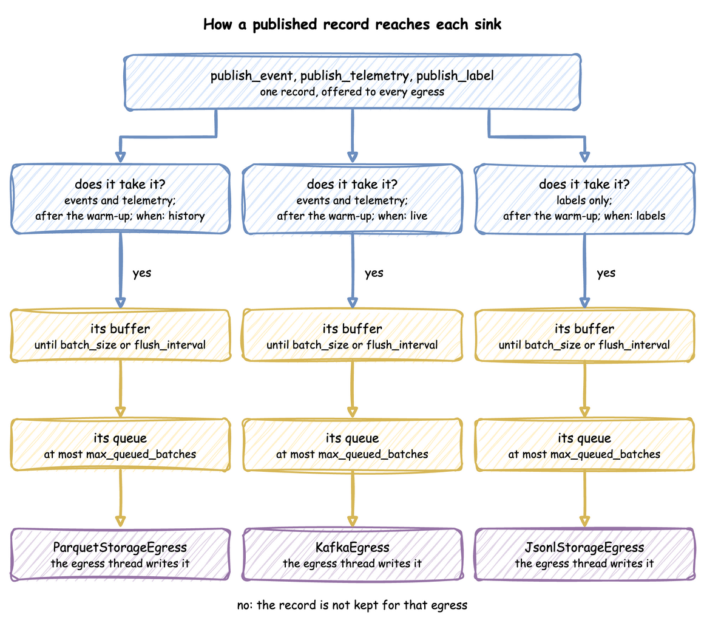

Egress, Batching and Delivery
An egress connector, or sink, writes the records a run publishes: to the console, Kafka, Redis, PostgreSQL, Parquet or JSON Lines files, or Iceberg tables. This page shows each sink, how to choose which records each one gets, and how records travel from a task to a sink.
What It Is
A run publishes three kinds of record: events, such as a task's queued, started and finished; telemetry, single values such as the statistics; and labels, the ground-truth records of what a scenario changed. Every sink receives every event and every telemetry record, unless its when says otherwise. Labels go only to sinks that ask for them. Records and Telemetry shows each record's shape and what each sink writes.

How to Use It
Each sink is attached with add_egress in the builder, passed to env.setup_egress in the low-level API, or listed under egress in a blueprint with its type and config. In the builder snippets below, app is a SimulationContext.
Console
ConsoleEgress has two formats. The default, log, logs each record at INFO level, one line per record: [EVT] for an event, [TEL] for telemetry and [LBL] for a label. It logs a whole batch with one call. desflow run prints these records as they are, one line each, while its other log lines start with the time, level and logger name. In a script, the logging format the script sets, such as the time and level, starts only the first line of each batch, and the lines after it start with [EVT], [TEL] or [LBL]. One call per record cost far more: in the measurements on Tune Performance, a run that logged each record with its own call took about 50 percent longer in total than one that logs each batch with one call.
| docs/snippets/pages/connectors.py:console-egress | |
|---|---|
With format="json", ConsoleEgress writes each record to stdout as one JSON line instead: the record as published, with its stream_type. Another program can then read the records. It writes at any log level, because the records are output, not a log. Python's logging writes to stderr by default, so the log stays apart from the records, and a pipe such as | jq .key reads only the records. In a blueprint it is type: Console with config: {format: json}. desflow run --sample and --stdout print through it in place of the file's sinks, as YAML Format describes.
| docs/snippets/pages/connectors.py:console-json | |
|---|---|
A consumer can check each line against the record schema: EventPayload, TelemetryPayload and LabelPayload are the Pydantic models of the three stream types, as Records and Telemetry describes:
| docs/snippets/pages/record_schemas.py:validate | |
|---|---|
Kafka
KafkaEgress sends events to event_topic and telemetry to telemetry_topic, keyed by the record's key or path_id. Kafka sends all records with one key to one partition, so all events of one entity stay in order. KafkaEgress creates both topics when the run starts, if they do not exist. With a topic_router, it creates none. Route Records to Topics sends records to other topics.
| docs/snippets/pages/connectors.py:kafka-egress | |
|---|---|
Parquet and JSON Lines
ParquetStorageEgress and JsonlStorageEgress write each batch as a file of its own, on a local disk or S3-compatible storage, through PyArrow. Without a path_router, each event is one flat row in default_path, with its value mapping unpacked into columns, and telemetry is left out. A Parquet file has a column for every key of any row in its batch. A key that first appears in a later batch adds a column to the later files, and a reader that unifies the files' schemas reads it as null in the earlier rows. An integer column that a later batch gives a float becomes a double in the later files. A mapping value becomes a struct column, and its keys are fixed by the first batch that has it. A nested key that first appears later is dropped. A batch that cannot be written is logged at ERROR, and the sink goes on with the next one.
File names. default_path, and any path a path_router returns, is a file name prefix, not a folder. Each batch is written as a file of its own, <stem>_<8 hex digits><extension>, in the path's folder, so output/events.parquet gives files such as output/events_1a2b3c4d.parquet. Give the extension in the path: output/events gives files with none. The folder is created on the first write.
Columns of a finished event. A task's queued and started events carry path_id and status. Its finished event's value is the task's payload only. So in a finished event's row, path_id and status are null unless the payload has them. The Parquet example adds them to its payload for that reason.
Read the files back as one table with pyarrow.dataset, which reads every file in the folder:
| docs/snippets/pages/file_sink.py:read | |
|---|---|
A second run adds its files beside the first run's, so reading the folder then counts both runs. Give each run a folder of its own, or clear the folder before a run.
Redis
RedisEgress appends each record to a Redis Stream with XADD, as one payload field holding the record as JSON. A __stream__ key in the record's value picks the stream, and is removed before writing.
| docs/snippets/pages/connectors.py:redis-egress | |
|---|---|
PostgreSQL
PostgresEgress inserts records into a table in batches. Only records whose value is a mapping are written, together with the labels on a labels sink. A label is written as sim_ts, timestamp, path, old, new and label. The record's sim_ts, timestamp, key (as event_id) and path_id are added to the value and replace fields of the same name. Its task and instance are added too, but a value field of the same name keeps its own value. Keys with no matching column are dropped. A __table__ key in the value sends the record only to the sink whose table_name matches. The connection string names odctl, the database that the odctl postgres profile creates, with the user user and the password password.
| docs/snippets/pages/connectors.py:postgres-egress | |
|---|---|
By default a record whose key already exists is skipped. upsert_keys updates that row instead, for a model that changes rows it wrote earlier, such as an order moving from packed to shipped. The key columns need a unique index. An update sets only the columns the record carries, and within one flush the last record for a key wins.
| docs/snippets/pages/connectors.py:postgres-upsert | |
|---|---|
Iceberg
IcebergStorageEgress appends records to an Apache Iceberg table through a REST catalog. One flush is one commit, so this sink needs a large batch_size of its own: every commit writes new metadata, and many small commits slow down queries. A table the sink creates has a column for every key of its first batch that has a value in some row. Iceberg has no null type, so a key that is null in every row waits for a batch that gives it a value. An example is task in a low-level event published without one. A key that first appears in a later batch is added to the table as an optional column, unless the table is named in schemas, which keeps the columns it gives. A batch the table refuses is logged at ERROR.
upsert_keys upserts on key columns instead of appending. A seeded model rerun over the same window writes rows with the same keys, so the upsert replaces those rows instead of duplicating them. An upsert reads the matching rows first, replaces whole rows, never deletes, and needs pyiceberg 0.9.0 or later.
| docs/snippets/pages/connectors.py:iceberg-upsert | |
|---|---|
Connectors in a Blueprint
In a blueprint, config holds the constructor's arguments. Settings that Python takes as objects are plain values there: a Parquet or JSON Lines filesystem is a mapping with type: local or type: s3, and an Iceberg catalog is a mapping of PyIceberg properties. A Postgres tables mapping creates its tables when the run starts. YAML Format lists them all.
Choose What Each Sink Gets
Every sink receives every event and telemetry record. when narrows that down:
- A function taking one record and returning True to send it to this sink, in the builder or as
!pythonin a blueprint. historyandlive, in a blueprint: the records stamped beforesimulation.go_live_at, and the rest, as Clocks and Pacing describes.labels: the ground-truth labels, and nothing else. No other sink receives a label, so data and labels always reach different sinks. Live Parameters describes them.
| docs/snippets/pages/batching.py:every-sink | |
|---|---|
| docs/snippets/pages/batching.py:labels | |
|---|---|
| docs/snippets/yaml/ground_truth.yaml:sinks | |
|---|---|
A file sink such as this one writes one file per batch under labels/, such as labels/labels_1a2b3c4d.jsonl. A run's warmup applies to every sink: none receives a record or telemetry stamped before it. Run Length describes it.
Batch Size and Flush Interval
A sink receives records in batches. A batch is handed over when it holds batch_size records, or when flush_interval simulation seconds have passed, whichever comes first. At factor: 0, the timer does not start until a go_live_at switches the run to real time, because simulation time is not tied to the wall clock before then.
| Setting | Default | Set with |
|---|---|---|
batch_size |
500 | with_batching, or per sink on add_egress |
flush_interval |
1.0 simulation seconds | with_batching, or per sink on add_egress |
max_queued_batches |
2000 | with_batching |
drain_stall_seconds |
30.0 seconds | with_batching |
with_batching sets the defaults, and each sink can have its own size and interval. A stream sink needs small, frequent batches to keep latency down. A file or lake sink needs large ones, because each batch becomes one file, and for Iceberg one commit.
| docs/snippets/pages/batching.py:defaults | |
|---|---|
| docs/snippets/pages/batching.py:per-sink | |
|---|---|
The same settings in a blueprint, and in the low-level API, where the lists are matched to the sinks by position and None means the default:
setup_egress also takes lag_monitor_interval, the simulation seconds between system.simulation.lag_seconds records. Its default, "auto", is off at factor 0 and 1.0 simulation seconds otherwise. A run that goes live starts it at the go-live instant. None or 0 turns it off. The builder and YAML set it with lag_interval, as Clocks and Pacing describes.
How It Works
A published record goes through the same steps for each sink:

publish_event,publish_telemetryorpublish_labelbuilds the record as a plain dictionary.- Each sink tests it once. A labels sink takes only labels, and only a labels sink takes a label. No sink takes a record stamped before the warm-up. Then the sink applies its
when. - The record goes into that sink's buffer. When the buffer reaches
batch_size, or the sink's timer fires, the buffer is handed to the sink's queue as one batch. - The egress thread takes batches from each queue and writes them with the sink's connector.
Each sink has its own buffer and its own queue, so a slow sink does not hold up a fast one, and memory is the sum of the buffers. A queue holds at most max_queued_batches batches. When it is full, the simulation waits for room, so a sink that cannot keep up slows the run instead of building a backlog. When a queue stays full for drain_stall_seconds, the sink has stopped consuming, and the run raises RuntimeError rather than losing records.
Teardown flushes every buffer, then waits for the queues to drain. It keeps waiting while they shrink, and gives up only when they have not shrunk for drain_stall_seconds. Records still queued then are lost, and a warning names the sinks that held them.
Stability and Limits
- A slow sink slows the run. The run slows on purpose: otherwise a backlog would build that teardown would have to throw away.
- Size or interval, whichever comes first. The effective batch is the smaller of
batch_sizeand what arrives in oneflush_interval, so a large size with a short interval never fills. A warning says so once, after one sink has flushed on its timer 20 times in a row with less than a quarter of itsbatch_size. - A labels sink receives only labels, and a data sink never receives one. A label sent to a Kafka sink goes to its
event_topicwith no key. - Records matching no sink are not written anywhere, which is how
whendrops them. - At
factor: 0, records leave a buffer only when it is full and at teardown.